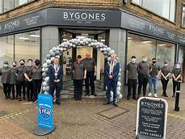
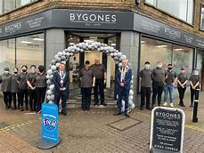
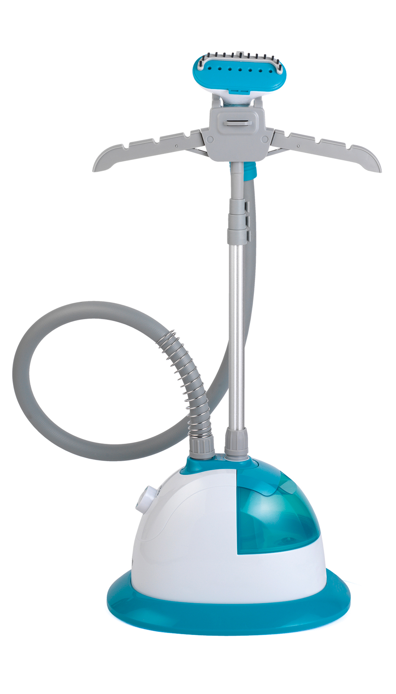
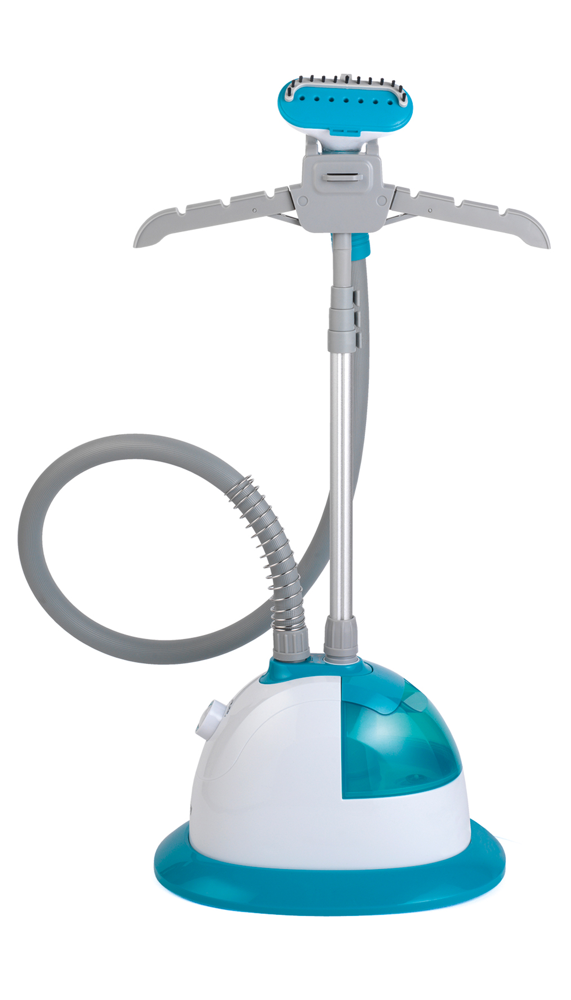

Since I have been at college, I have gained some valuable work experience. For example, working in the café 'Bygones'. I was working in the back doing general chores like washing dishes and peeling vegetables, these were important jobs and vital to the cafe. I worked in the Norfolk Hospice charity shop. I started out in the back of the shop by hanging clothes and price tagging them. I then was given the job of steaming the clothes ready for them to go out into the shop. My next job was out the front stocking the shelves, taking clothes off the rails, working on the till, taking cash and giving the customers their change. In my time doing work experience I have learnt so much in different environments as I gained a number of new skills, met many different people and gained experience in communication and social skills.
Cancer Research Wisbech
The role I did was very similar to the role I did above.

 

 >

>
